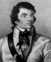

Onun tek bir davası vardı, insanın özgürlük ve mutluluğu...
— Thomas Jefferson
İki kıtada ulusal bir kahraman olarak görülen Tadeusz Kosciuszko (1746-1817), Amerikan Devrimi’nde bir general olarak hizmet vermiştir. Daha sonra ise memleketi Polonya’da Rusya’ya karşı bir ayaklanma başlatmıştır. Koyu bir idealist olan Kosciuszko, her iki ülkede de devrimci hareketi yönlendiren, Aydınlanma Çağı’nın demokrasi ve bağımsızlık ideallerini benimsemişti.

Kosciuszko günümüz Belarusu’nda küçük bir köyde dünyaya geldi. Askeri akademiye yazıldı. Buradaki derslerinde üstün başarı gösterdi ve resim çalışıp askeri taktikler üzerine ders alacağı Paris’e gitmek için burs kazandı. Amerikan Devrimi başladığı sırada Amerika’nın Fransa elçisi Benjamin Franklin (1706–1790), Kosciuszko’yu Anayurt Ordusu’na katılmaya davet etti (1776).
Kosciuszko’nun askeri taktikler ve askeri mühendislik konusundaki ustalığı onu eğitimsiz koloni milislerinden düzenli bir ordu yaratmakla görevli olan Geoger Washington (1732-1799) için vazgeçilmez bir değer kılıyordu. Kosciuszko, Pensilvanya ve New York’ta kaleler tasarlayıp yapılmasına yardım etti. West Point’teki savunmaya liderlik yaptı. 1783 yılında kongre onu tuğgeneral rütbesine çıkardı.
Ertesi yıl Polonya’ya döndü. 1789 yılında Polonya Ordusu’na katılmasına izin verilene dek beş yıl boyunca yoksulluk içinde yaşadı. Askeri açıdan zayıf olan Polonya istikrarsız bir pozisyondaydı. İki büyük güç arasında sıkışmıştı. 1792 yılında Rusya ülkeyi işgal etti ve Prusya’dan ayırdı. Ülkenin sadece küçük bir bölümü yabancı egemenliğine girmemişti. Kosciuszko Polonya’nın bağımsızlığı umuduyla iki yıl sonra Ruslar’a karşı bir isyan başlattı.
Kosciuszko isyanı kısa sürdü. Lideri 1794 yılında yakalandı. 1796 yılında Çar tarafından affedilene kadar zindanda kaldı. Ardından ABD ve Fransa’da sürgüne gönderildi. Ruslar’a karşı yeni bir isyan başlatma çabaları sonuç vermedi. Yetmiş bir yaşında İsviçre’de öldü.
Ek Bilgiler
1- ABD ve Polonya’da adlarını Kosciuszko’dan alan pek çok sokak bulunmaktadır. Aynı zamanda Kosciuszko Dağı’nın da isim babasıdır. Polonyalı bir kaşif tarafından bulunan Kosciuszko, Avusturalya’nın en yüksek dağıdır.
2- Kosciuszko’nun Philedelphia’da yaşadığı ev ulusal anıt haline getirilmiştir.
3- Mirasında, sahip olduğu malların ABD’de köle azat etmek için kullanılmasını istemişti. Ne var ki bu talebi yasal tartışmalar nedeniyle askıya alındı. Yüksek mahkeme, 1852 yılında paranın generalin Avrupa’daki akrabalarına gönderilmesine karar verdi.